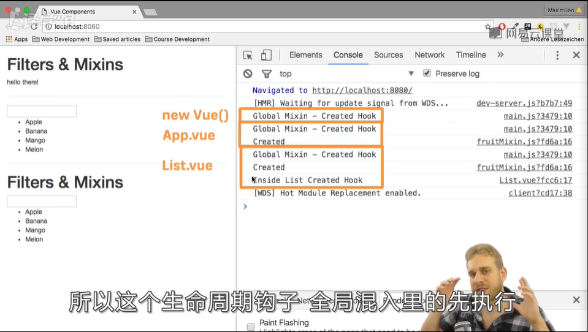

过滤器：转换数据格式，并不是改变数据本身，只是转换给用户看
App.vue
<!-- |表示管道符，Vue会将符号前面的内容
作为参数传给函数 -->
<!-- 串联过滤器，每个管道符表示将前面处理的结果作为参数，
传给后面的函数 -->
<p>{{ text | toUppercase |to-lowercase }}</p>
export default {
data(){
return{
text:'Hello there!',
fruits:['Apple','Banana','Mango','Melon'],
filterText:''
}
},
// 局部过滤器
filters:{
//每个过滤器都应该有输入value
toUppercase(value){
return value.toUpperCase();
}
},
computed:{
}
}
main.js
//全局注册过滤器
Vue.filter('to-lowercase',function(value){
return value.toLowerCase();
})
过滤器的性能缺点
列表输出时，由于Vue没有在后台对filter进行优化，它不能检测是否需要重新运行过滤器（当元素内容没有发生变化时，比如字符串本身是小写，过滤器也是小写，这就不需要执行过滤器），而是每次都会重新加载，性能很差
为了避免这种情况发生，要使用计算属性来替代过滤器
<input type="text" v-model="filterText">
<ul>
<li v-for="fruit in filteredFruits" :key="fruit">
{{ fruit }}
</li>
</ul>
<script>
export default {
data(){
return{
text:'Hello there!',
fruits:['Apple','Banana','Mango','Melon'],
filterText:''
}
},
// 局部过滤器
filters:{
//每个过滤器都应该有输入value
toUppercase(value){
return value.toUpperCase();
}
},
computed:{
filteredFruits(){
// js中Array的方法filter：不改变原数组，而是新建一个数组
// 新数组中均为符合条件的元素
return this.fruits.filter((element)=>{
return element.match(this.filterText);
});
}
}
}
</script>
总结：对于一些简单的情况直接使用过滤器即可，但是对于一些复杂的情况，使用计算属性会更好
这种情况就引入了一个问题，对于一些又需要重用的，又比较复杂的情况，我们不能使用全局注册过滤器来实现，因为性能浪费，这就需要混入
混入机制
混入代码
fruitMixin.js
需要命名
export const fruitMixin = {
data() {
return {
fruits: ["Apple", "Banana", "Mango", "Melon"],
filterText: ""
};
},
computed: {
filteredFruits() {
// js中Array的方法filter：不改变原数组，而是新建一个数组
// 新数组中均为符合条件的元素
return this.fruits.filter(element => {
return element.match(this.filterText);
});
}
}
};
List.vue
<template>
<div>
<input type="text" v-model="filterText" />
<ul>
使用混用代码中的计算属性
<li v-for="fruit in filteredFruits" :key="fruit">{{ fruit }}</li>
</ul>
</div>
</template>
<script>
//引入混入代码
import { fruitMixin } from './fruitMixin.js';
export default {
//声明混入代码
mixins:[fruitMixin]
};
</script>
<style>
</style>
App.vue
import List from './List.vue';
//引入混入代码
import { fruitMixin } from './fruitMixin.js';
export default {
//注意这里还有本身的data属性，说明Vue机制将自身声明的data属性和混入引入的data属性进行融合
data(){
return{
text:'Hello there!'
}
},
// 局部过滤器
filters:{
//每个过滤器都应该有输入value
toUppercase(value){
return value.toUpperCase();
}
},
components:{
appList:List
},
//声明混入代码
mixins:[fruitMixin]
}
混入机制
混入不会破坏组件原有的Vue实例，而是两者能够很好的结合
混入代码与组件自身代码执行顺序：
先执行混入代码，再执行组件代码
特殊的全局混入：不用再组件中声明，默认执行
注意：一般只在插件里面使用，实际开发一般不用
main.js
Vue.mixin({
created(){
console.log('Gloval Mixin - Created Hook');
}
})
执行顺序：
全局混入>一般混入>组件代码

对于混入中data属性里面的变量，会在每一个使用混入的组件中新生成一个对象，而不是共享一个对象。
比如在混入里面定义的数组，在其中一个使用混入的组件中被修改，在其他组件下，数组状态不变。
如果需要在一个组件中改变而影响所有组件，可能使用之前的事件总线，即在main.js中定义一个evenBus
对于混入代码里面的计算属性，其使用的data属性中的变量可以不再混入代码中实现，但必须在组件代码中实现